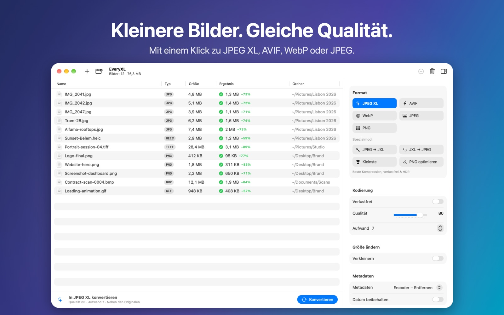

Kleinere Bilder. Gleiche Qualität.
Verkleinere Fotos und Grafiken mit modernen Formaten. Konvertiere ganze Ordner parallel in JPEG XL, AVIF, WebP oder JPEGLI – schnell, privat und komplett offline.
Bald im Mac App StoreErfordert macOS 14 oder neuer · Apple Silicon und Intel

Funktionen
Moderne Formate
JPEG XL, AVIF, WebP, JPEGLI und PNG – kleinere Dateien bei gleicher Qualität.
Verlustfrei JPEG → JXL
JPEGs rund 20 % kleiner – das Original lässt sich jederzeit bitgenau wiederherstellen.
Stapel & parallel
Ganze Ordner hineinziehen. EveryXL nutzt alle Kerne deines Mac.
Größe & Metadaten
Sechs Skalierungsmodi, EXIF/XMP/GPS-Kontrolle und erhaltene Daten.
Privat
Alles läuft auf deinem Mac. Keine Konten, keine Uploads, kein Tracking.
Nativ
Für macOS in SwiftUI entwickelt, in sechs Sprachen.